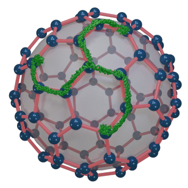
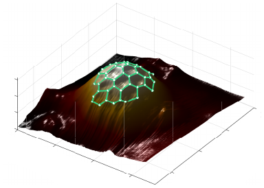
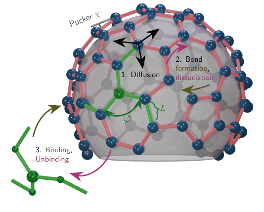
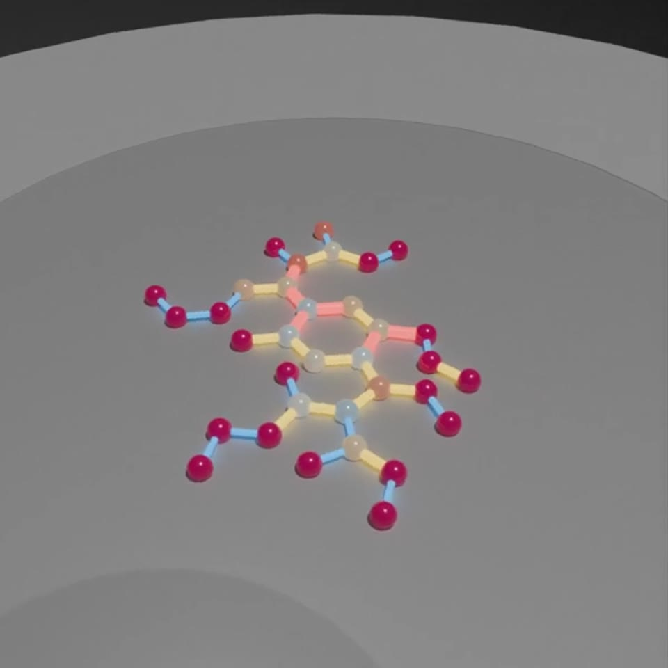
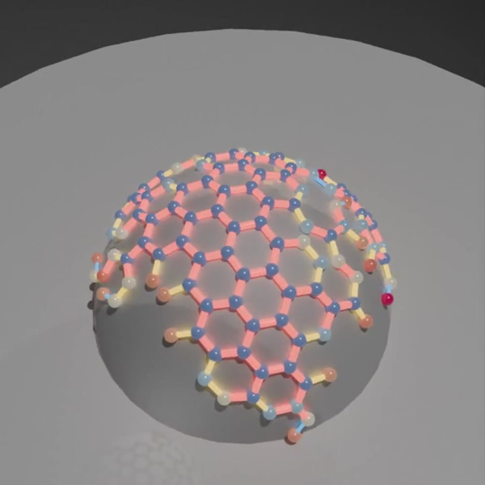
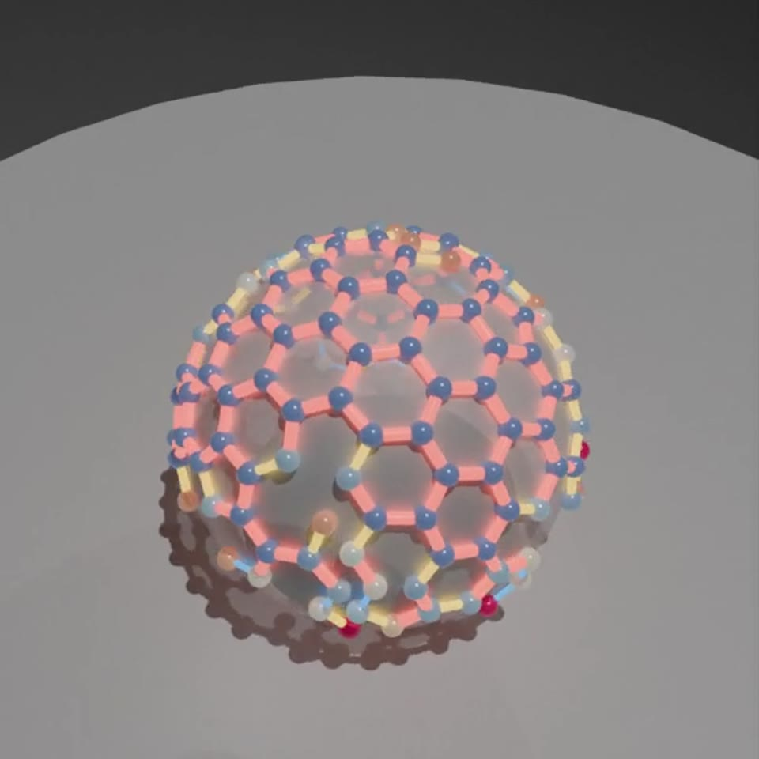
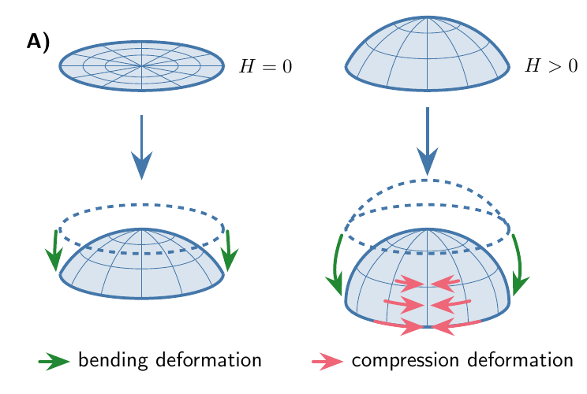
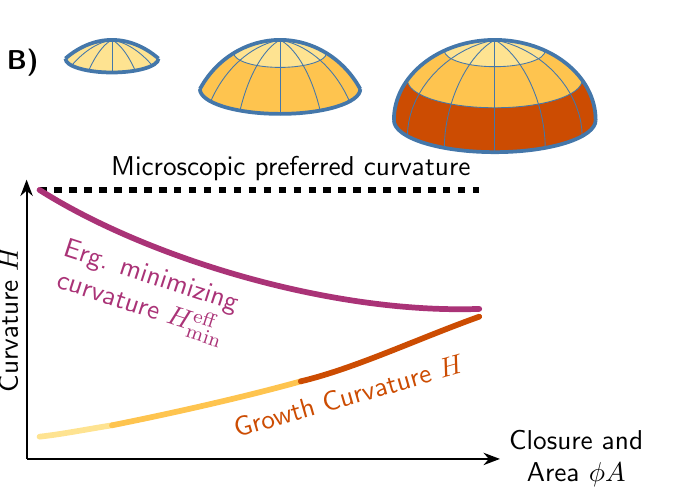
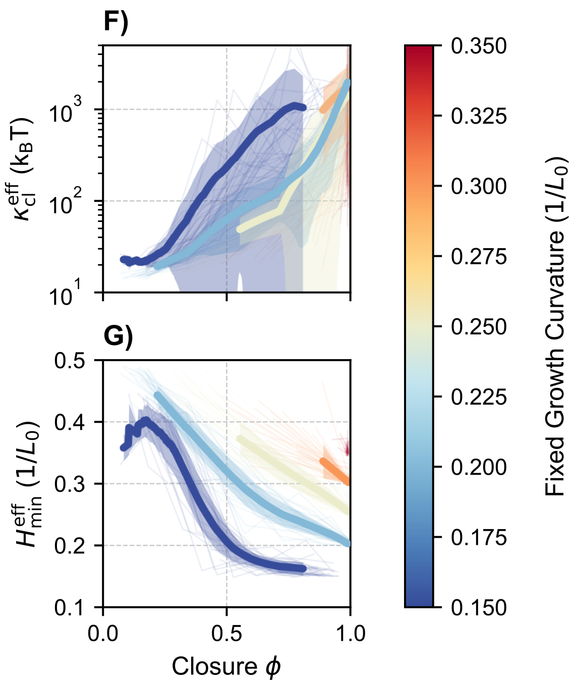
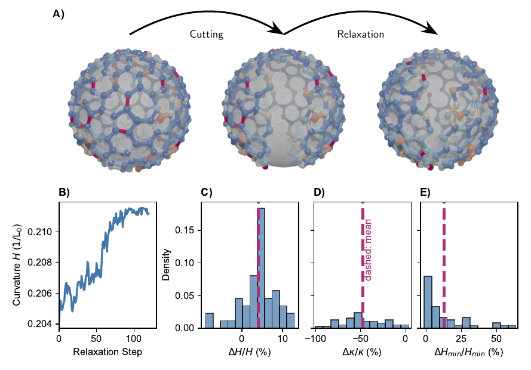

01Flat plaque
The lattice gains area, but remains too loosely connected to transmit a coherent bending stress.
A visual guide · about 6 minutes
Cells routinely pull small patches of their surface inward and pinch them off as transport vesicles. A protein called clathrin helps shape the membrane — but its coat can remain flat, stop halfway, or close successfully. Our model asks how all three outcomes can grow from the same local rules.
Guide to Pathway variability, coat stiffening and mechanical adaptation during clathrin-mediated endocytosis by Dreckhoff, Schwarz & Lettermann (2026 preprint).

The cell membrane is a flexible skin. To bring receptors, nutrients, and other cargo inside, a patch of that skin bends inward and eventually separates as a tiny vesicle. Clathrin molecules assemble on the membrane’s inner face into a polygonal scaffold that helps organize this process.

Why this is hard to observe
Electron and force microscopy reveal coat structure but do not follow one coat through its entire life. Live-cell imaging follows individual sites, but not every bond or local curvature. Simulations can connect those two views.
Mature clathrin coats are far stiffer than individual clathrin legs. Many continuum models therefore prescribe coat stiffness and preferred curvature as fixed inputs. The open question addressed here is whether those material properties can instead emerge from discrete, stochastic assembly — and thereby help select the pathway.
Every simulated coat starts small and nearly flat. The final shape is not assigned in advance. Local, random assembly events and the membrane’s mechanical resistance make trajectories diverge.
The lattice gains area, but remains too loosely connected to transmit a coherent bending stress.
The coat bends the membrane, but reaches a mechanically favorable state before closure.
The energy-favored state keeps moving toward higher closure until a vesicle-like coat forms.

One map, three routes
A flat plaque moves almost straight upward: it grows without bending. An aborted pit moves rightward but stops before closure. A closed trajectory continues toward the geometric boundary φ = 1. The diamonds mark the two gates developed below.
The membrane is represented as a spherical cap with area A and mean curvature H. The dimensionless closure φ = AH2/4π runs from 0 for a flat patch to 1 for a complete sphere. Flat, stalled, and closed trajectories occupy distinct routes in this area–curvature plane.
The simulation keeps only what is needed to let structure and mechanics influence each other. It combines discrete clathrin-like units with a continuous, deformable membrane.
Units bind, unbind, diffuse, and form or break bonds with nearby units.
Those local events produce connectivity, vacancies, and polygonal defects.
Between assembly events, membrane curvature adapts to the current mechanical state.

Nothing in the code says “make a plaque” or “make a vesicle.”
The pathway is an outcome, not an instruction.The branching is easier to understand as two gates reached in sequence. The first asks whether the coat can act as a connected material. The second asks where that changing material makes the system want to go.
The coat needs enough interconnected units for mechanical stress to propagate across the lattice.

Area grows; curvature does not.
Stiffness, curvature memory, and membrane load reshape the landscape during growth.

The trajectory settles before closure.

The landscape keeps pulling the system onward.
Gate 1 is a connectivity gate. Below the threshold, the lattice cannot transmit bending stresses coherently across the coat and remains flat. Above it, connected curved geometry activates coat-scale stiffening. Connectivity here is therefore a mechanical proxy for stress transmission, not a proposed universal number for every cell.
Gate 2 acts on coats that have already passed Gate 1. Polymerization favors adding area, while membrane bending and surface tension penalize deformation. Clathrin elasticity favors the coat’s current energy-minimizing curvature, with a strength set by its effective bending rigidity. Because the coat properties evolve during assembly, the total energy minimum moves through area–curvature space and either remains accessible before closure or crosses the closure boundary.
These are not poetic labels. They are effective material properties measured from the simulated coat and predicted by a continuum theory of curved elastic sheets.

Geometry-induced stiffening
A nearly flat connected lattice can change shape mostly by rotating its links. In a curved lattice, changing curvature also forces parts of the network to stretch or compress. Because stretching is much costlier, the effective bending rigidity rises sharply as closure grows.

Curvature memory
Each newly incorporated part is relaxed at the membrane curvature present at that moment. The mature coat therefore prefers a weighted average of its growth curvatures — not simply the microscopic preferred curvature of one clathrin unit, and not merely its final shape.

For a connected spherical patch, curvature changes leave a residual dilation that grows with closure. This couples the soft angular mode to the much stiffer in-plane stretching mode. A single geometry-dependent weight then predicts both the increase in effective rigidity and the shift of the effective energy-minimizing curvature. The same scaling collapses simulations run at several fixed growth curvatures and remains predictive when curvature adapts during growth.
If the lattice stores stress and growth history, severing some connections should change more than its outline. The remaining structure should relax toward a new mechanical state.
Assemble a mature, connected coat.
Cut nodes and bonds along a path.
Relax the connected remainder.
After cutting, the simulated coats become less stiff and, on average, shift toward higher curvature. This is consistent with releasing stress and preferentially erasing older, lower-curvature memory.

Take-home idea
A growing clathrin lattice becomes connected, stiffens through curved geometry, and remembers the shapes in which new material was added. Those evolving properties feed back on membrane shape and create multiple pathways from the same microscopic ingredients.